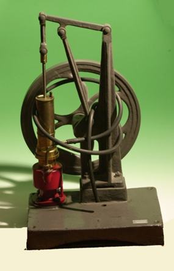

Macchina pneumatica a olio di Geryc o di Fleus
Scuola di provenienza: Liceo statale "P.E. Imbriani", Avellino
Settore: Meccanica
Costruttori: Istituto Archimede, Roma
Materiali: Ghisa, ottone e gomma
Accessori: Campana di vetro
Stato di conservazione: Buono, consumata la guarnizione del piatto
Descrizione: Pompa idraulica a manovella con campana di vetro con la quale si può raggiungere facilmente la presenza di 1/10 tor. Il volano lo si può girare tanto in un verso che nell´ altro. La velocità ideale di rotazione è di 50 giri al minuto.